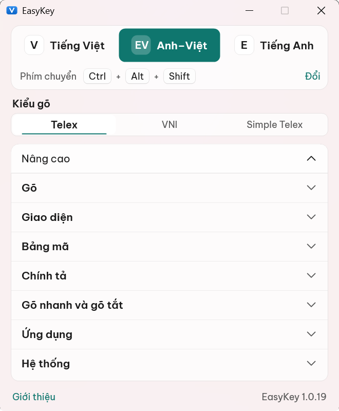
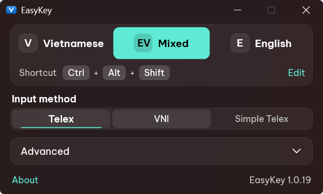
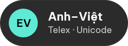

Nhẹ và gọn
Chỉ một file EasyKey.exe. Không trình cài đặt, không DLL, không .NET. Bỏ vào USB mang đi cũng chạy.
🇻🇳 Mã nguồn mở · GPL v3 · Windows 11 x64
Một file EasyKey.exe chưa tới 1 MB. Gõ lẫn tiếng Anh và tiếng Việt không cần chuyển chế độ, chơi game không lo bộ gõ. Không tài khoản, không quảng cáo, không ghi lại phím.
Giữ nguyên bộ máy gõ của OpenKey, viết lại gần như toàn bộ phần còn lại.
Chỉ một file EasyKey.exe. Không trình cài đặt, không DLL, không .NET. Bỏ vào USB mang đi cũng chạy.
Chế độ Anh–Việt tự nhận ra từ tiếng Anh và trả lại đúng phím bạn gõ — kể cả từ dễ nhầm như "test" (tét) hay "this" (thí). Hết cảnh phải bấm chuyển giữa câu.
Bật chế độ game là WASD, QWER đi thẳng vào game. Bấm Enter để chat tiếng Việt, Esc là về trận.
Mỗi ứng dụng giữ chế độ gõ và bảng mã riêng. Đang gõ code ở VS Code, chuyển sang Zalo vẫn là tiếng Việt.
Không tài khoản, không quảng cáo, không thu thập dữ liệu, không ghi lại phím. Ô mật khẩu tự gõ phím thô.
Nền Mica, sáng/tối theo Windows, chọn màu nhấn, chữ sắc nét ở mọi mức phóng to. Không có ô ENG/VIE chiếm chỗ trên thanh tác vụ.
Báo khi có bản mới, luôn hỏi trước khi cài, và chỉ cài file mang chữ ký số của EasyKey.
Chỉ bỏ dấu khi từ đúng chính tả. Bỏ dấu nhầm? Bấm Esc ngay sau từ đó để lấy lại phím vừa gõ. Gõ tắt không giới hạn, tự viết hoa theo cách bạn gõ.
Không trình cài đặt, không khởi động lại máy.
Tải EasyKey.exe từ GitHub hoặc GitLab, rồi mở nó. Không cài đặt, không cần quyền Admin.
Mặc định là Telex, bảng mã Unicode. Gõ ở bất cứ đâu — trình duyệt, Word, Discord, game.
Đổi qua lại giữa Tiếng Việt → Anh–Việt → Tiếng Anh. Biểu tượng khay báo bạn đang gõ gì: V, EV hay E.
"test" và "OK" giữ nguyên tiếng Anh, phần còn lại bỏ dấu chuẩn. Tên biến, email, snake_case không bị đụng tới.
Esc ngay sau từ đó trả lại đúng phím bạn đã gõ: việt → vieejt. Không mất công xoá và gõ lại.
Có sẵn: ko → không, dc → được, vs → với, mn → mọi người, ntn → như thế nào. Thêm bao nhiêu gõ tắt tuỳ bạn.
Sáng, tối hoặc theo Windows — EasyKey đổi theo hệ thống của bạn.



EasyKey được thiết kế để bạn đọc được toàn bộ mã nguồn và tự kiểm chứng.
$ netstat | findstr -i easykey (không có kết nối nào ngoài kiểm tra cập nhật) $ where /r %LOCALAPPDATA% *.log (không tìm thấy file log) $ echo "xin chao" | easykey --check ✓ xin chào — bỏ dấu 100% cục bộ
Windows 11 bản 64-bit. Không cần quyền Admin, .NET hay Visual C++ Redistributable.
Không cần gỡ, chỉ cần tắt chúng đi khi dùng EasyKey. EasyKey sẽ nhắc bạn nếu phát hiện hai bộ gõ cùng chạy.
Không. Phím chỉ được xử lý ngay trên máy bạn và không được ghi ra đâu cả. Kết nối duy nhất EasyKey tự tạo là kiểm tra bản mới trên GitHub.
EasyKey giữ bộ máy gõ của OpenKey và viết lại gần như toàn bộ phần còn lại: giao diện, chế độ Anh–Việt, chế độ game, tự cập nhật, cùng nhiều bản sửa lỗi ở trình duyệt và ứng dụng hiện đại.
Bản phát hành được ký số bằng chứng chỉ tự cấp của dự án, nên lần đầu mở Windows có thể hiện "Unknown publisher". Bấm More info › Run anyway là được.
Chưa. EasyKey đang tập trung làm thật tốt trên Windows 11 x64 trước.
Cài đặt › Nâng cao › Hệ thống › Gỡ EasyKey khỏi Windows. Sau đó bạn chỉ cần xoá file EasyKey.exe.
Tải EasyKey, mở lên và gõ thử ngay — không cài đặt, không cam kết gì cả.